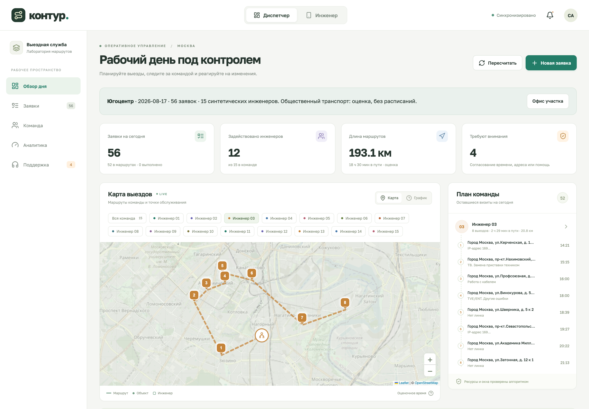
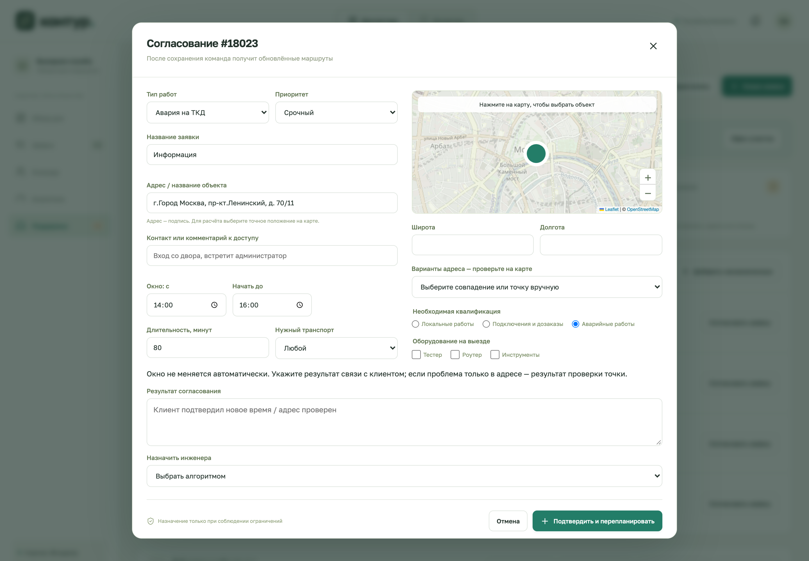

Заявки → инженеры и расписание → пересчёт при аварии → согласование конфликтов
Распределены по маршрутам.
Три независимых синтетических участка.
| Участок | Всего | Базовый | ALNS |
|---|---|---|---|
| Восток | 66 | 47 | 61 |
| Юго-восток | 83 | 41 | 64 |
| Югоцентр | 56 | 37 | 52 |
Источник: docs/benchmark.json · 100 итераций. Один и тот же пул инженеров для обоих алгоритмов. Базовый: первый допустимый исполнитель, заявки по порядку.
Навыки, окна, нормативы работ, смены и поездки. Алгоритм ALNS на JavaScript.
Карта, расписание, заявки, аналитика и синхронизация изменений.
Очередь «Требует согласования», ручная корректировка и история решений.
Проверить 20 заявок без координат и два офиса; подключить реальные поездки на общественном транспорте.

